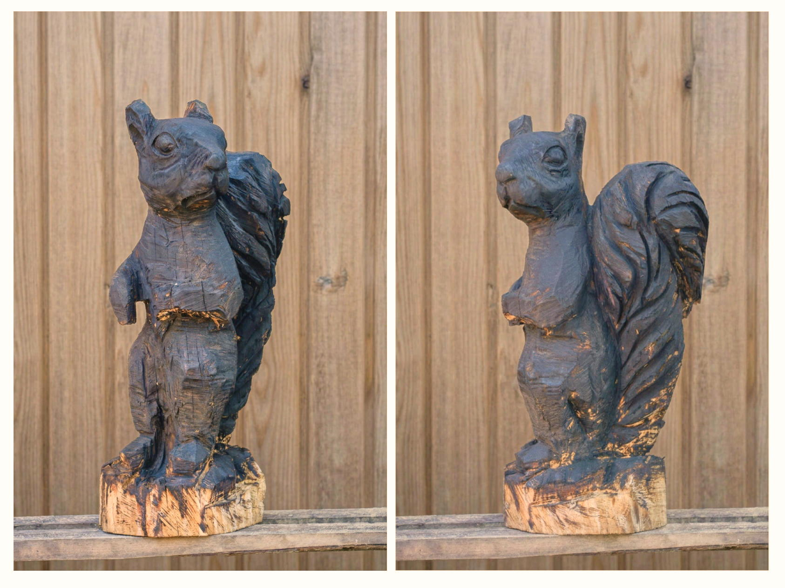

The best pieces in a room are the ones you still stop to look at after years on the wall. Art crafted by hand holds the energy of its maker — and through that, it can create a feeling of connection that draws you back, time and time again.
Some of these works were created on commission, while others are driven by my own ideas and artistic exploration.
I produce a wide range of commissioned work, including abstract paintings, ink drawings, sculptures, and carpentry-based pieces such as design furniture. I also build the frames for my paintings myself.


Illusion of Restriction 3Acrylic on canvas — 55 × 55 in

Illusion of Restriction 4Acrylic on canvas — 55 × 55 in

PumpkinInk on paper — 13.5 × 7.5 in

PaoloInk on paper — 10 × 13.5 in

HareChainsaw carved pine — 22 in height

SquirrelChainsaw carved pine — 29 in height
For exhibitions, collaborations, or commissioned work, feel free to get in touch.